O programa completo
Todos os valores contemplam a jornada completa: encontro individual, três treinamentos em grupo, mapa de evolução e suporte contínuo no WhatsApp. Cada grupo reúne 10 executivos.
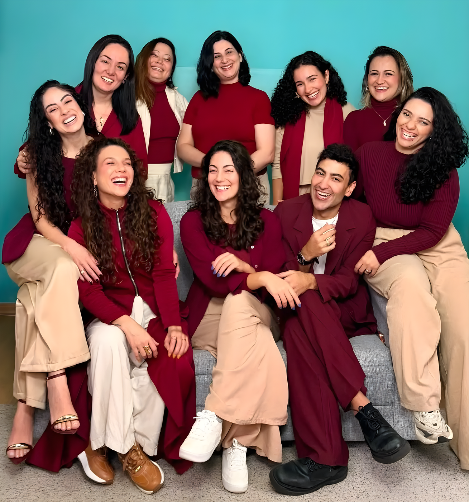
Um instituto de
Comunicação com Propósito
O Voz do Ser é um Instituto de Comunicação com Propósito, autoconhecimento e mudança de mentalidade. Atuamos nas áreas clínica, organizacional e educacional, oferecendo terapias, cursos e treinamentos em comunicação, inteligência emocional e desenvolvimento pessoal.
Nossa abordagem une ciência, prática e espiritualidade, para promover transformação de relacionamentos e expansão consciencial.
metodologia
Empresas e times que já viveram
a Comunicação com Propósito
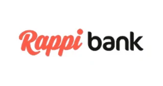
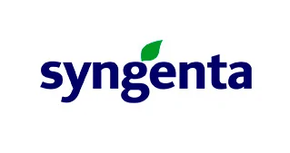
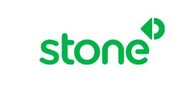
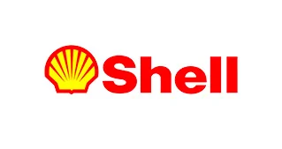
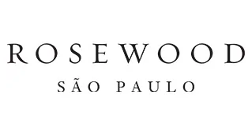
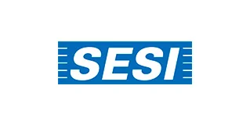
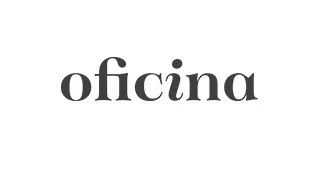
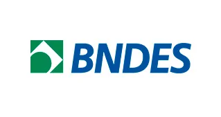
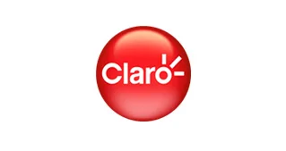
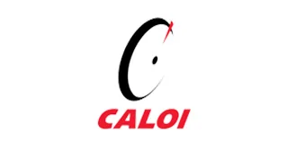
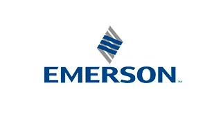
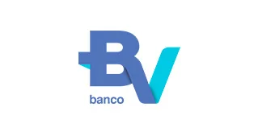
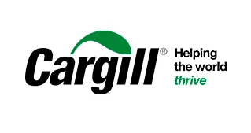
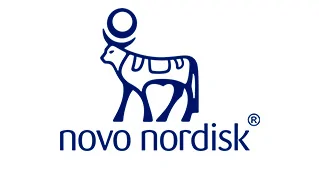
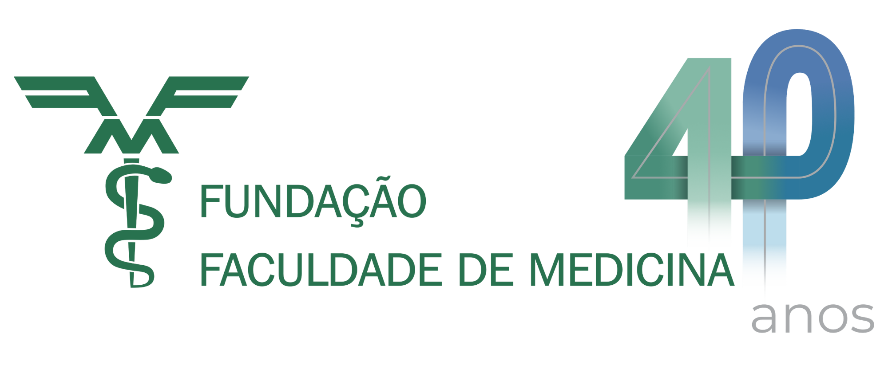
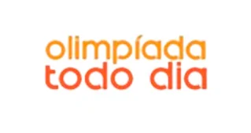
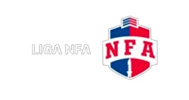
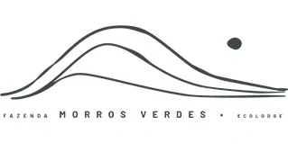
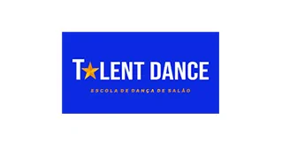
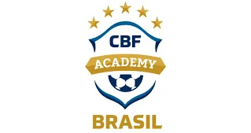
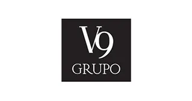
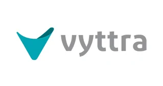
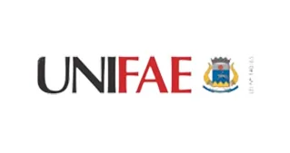
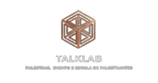
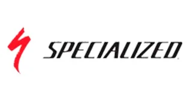
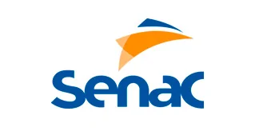
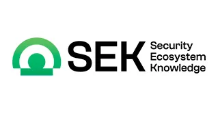
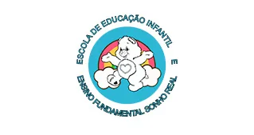
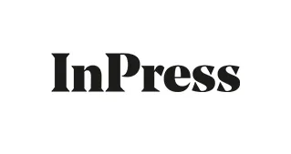
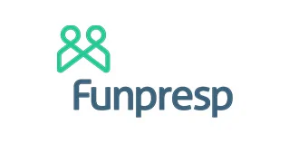
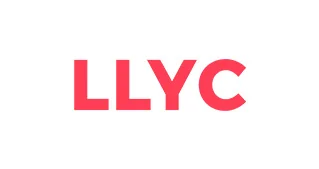
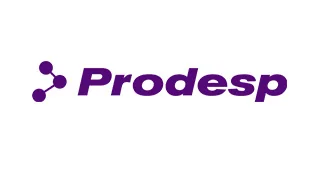
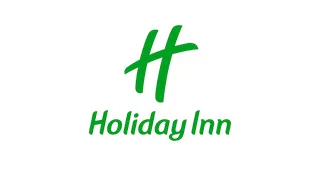
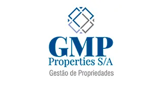
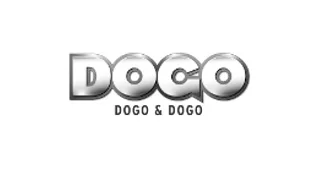
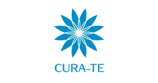
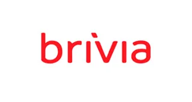
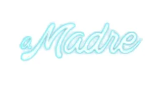
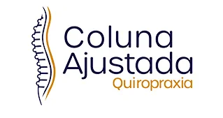
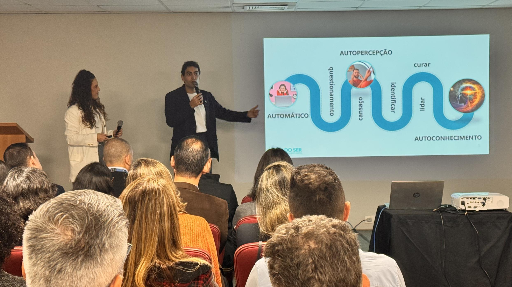
A comunicação de quem lidera
é a mensagem da empresa
Estamos à disposição para alinhar o calendário das seis semanas e a formação dos grupos de executivos da Seguros Unimed.